실제 설정 화면 캡처 수록Modbus TCPModbus RTU / ASCII기술지원 요청서 포함
대상 독자 · 공장 설비 · PLC 담당자 / 건물 BMS · 시설관리 담당자 / SI · 엔지니어링 실무자 발행 · 주식회사 모넷코리아 (Monnit Korea) | 서울시 서초구 효령로 380 세안빌딩 8층
목차
이 백서는 이미 운영 중인 PLC · BMS · SCADA를 손대지 않고, 무선센서로 수집한 온도 · 습도 · 진동 · 누수 · 조도 데이터를
Modbus 레지스터로 그대로 읽어오는 방법을 다룹니다.
설명은 모두 실제 게이트웨이 설정 화면과 Modbus Poll 실측 화면을 함께 실었고,
화면 위 빨간 번호는 아래 설명의 번호와 같습니다. 화면만 따라가도 연동이 끝나도록 구성했습니다.
01 왜 지금 무선센서 + Modbus인가 — 배선 없이 계측점을 늘리는 방법02 시스템 구성과 데이터 흐름 — 센서 → 게이트웨이 → 상위 시스템03 게이트웨이 선택 기준 — Modbus TCP vs Serial Modbus04 Modbus 레지스터 맵 구조 — 슬롯 · 16 레지스터 규칙05 센서 타입별 데이터 정의 — 실측 화면으로 보는 값 해석06 게이트웨이 설정 절차 — 설정 화면 7단계07 Modbus Poll로 연동 검증하기 — 화면 그대로 따라 하기08 적용 시나리오 — 공장 설비 / 건물 BMS09 도입 전 체크리스트 — 현장 조사 항목10 기술지원 문의 — 증상별 1차 점검표 · 요청서 양식11 자주 묻는 질문 & 제품 사양 — FAQ · Serial Modbus Gateway 사양
이 백서를 읽고 나면
우리 현장에 TCP형과 시리얼형 중 어느 게이트웨이가 맞는지 판단할 수 있습니다.
PLC · BMS 엔지니어에게 넘길 레지스터 주소표를 직접 만들 수 있습니다.
게이트웨이 설정 화면에서 어느 항목을 어떤 순서로 건드려야 하는지 알 수 있습니다.
연동이 안 될 때 어디부터 확인하고, 무엇을 첨부해 문의해야 하는지 알 수 있습니다.
화면 캡처에 대하여
본문의 모든 화면은 실제 현장에서 캡처한 것입니다. IP 주소, 센서 ID, 측정값은 캡처 당시의 값이므로
독자의 현장에서는 다른 숫자가 표시됩니다. 화면의 위치와 항목 이름을 기준으로 보시면 됩니다.
01왜 지금 무선센서 + Modbus인가
설비 데이터를 더 보고 싶다는 요구는 항상 있습니다. 막히는 지점은 대부분 센서가 아니라
배선과 상위 시스템 교체 비용입니다. 무선센서를 Modbus로 붙이면 이 두 가지를 모두 우회할 수 있습니다.
현장에서 반복되는 세 가지 벽
문제
현장에서 벌어지는 일
무선센서 + Modbus 연동 시
배선 비용과 공기
계측점 하나 추가에 배관·트레이·전원 공사가 따라붙고, 라인을 세워야 하는 구간은 아예 포기하게 됩니다.
새 모니터링 시스템을 별도로 도입하면 화면이 둘로 나뉘고, 운전원은 결국 기존 화면만 봅니다.
기존 PLC · BMS · SCADA가 Modbus 마스터로 값을 읽어갑니다. 화면 · 알람 · 이력은 쓰던 것을 그대로 씁니다.
계측 사각지대
회전기기 베어링, 물탱크 하부, 옥외 판넬, 창고처럼 배선이 어려운 곳의 데이터가 비어 있습니다.
비가시 환경에서도 장거리 무선으로 전송되므로, 그동안 못 보던 지점을 계측점으로 편입할 수 있습니다.
Modbus를 접점으로 삼는 이유
Modbus는 감시용 상위 컴퓨터와 원격 단말(RTU)을 연결하기 위해 만들어진 개방형 산업 프로토콜로, SCADA 계통에서 오랫동안
표준처럼 쓰여 왔습니다. 하나의 유선 네트워크에 약 247대의 장치를 연결할 수 있고,
국내에 설치된 PLC · BMS · HMI · DCS 대부분이 별도 개발 없이 Modbus 마스터로 동작합니다.
즉 게이트웨이가 Modbus 슬레이브 역할을 맡는 순간, 무선센서 데이터는 상위 시스템 입장에서
기존에 읽던 다른 계측기와 구분되지 않는 하나의 레지스터 값이 됩니다. 드라이버 개발도, 미들웨어도 필요 없습니다.
256이더넷 게이트웨이 최대 등록 센서 수
16센서 1대당 할당 레지스터
1,200ft+비가시 환경 무선 전송 거리
55종+선택 가능한 무선센서 종류
한 줄 요약
새 시스템을 도입하는 프로젝트가 아니라, 기존 시스템의 입력 포인트를 늘리는 작업입니다.
그래서 결재 규모와 검증 부담이 크게 줄어듭니다.
02시스템 구성과 데이터 흐름
구성은 세 덩어리로 끝납니다. 무선센서, 게이트웨이, 그리고 이미 쓰고 있는 상위 시스템입니다.
센서 데이터는 Encrypt-RF® 보안(키 교환 + AES-128)으로 암호화되어 전송됩니다.
본체 측면 스티커에 ID와 SC(Security Code)가 인쇄되어 있으며, 게이트웨이 등록 시 이 두 값을 사용합니다.
② 게이트웨이
여러 센서의 최신 값을 내부 레지스터 테이블에 유지하는 데이터 집중기(Data Concentrator)입니다.
상위 시스템의 Modbus 요청이 오면 해당 주소의 값을 응답합니다. 즉 게이트웨이는 슬레이브입니다.
클라우드 플랫폼(iMonnit)을 병행할 수도 있고, 로컬 Modbus 전용으로만 운용할 수도 있습니다.
③ 상위 시스템
기존 PLC · BMS · SCADA · HMI가 Modbus 마스터로서 게이트웨이를 주기적으로 폴링합니다.
추가되는 작업은 레지스터 주소 매핑과 스케일 변환뿐입니다.
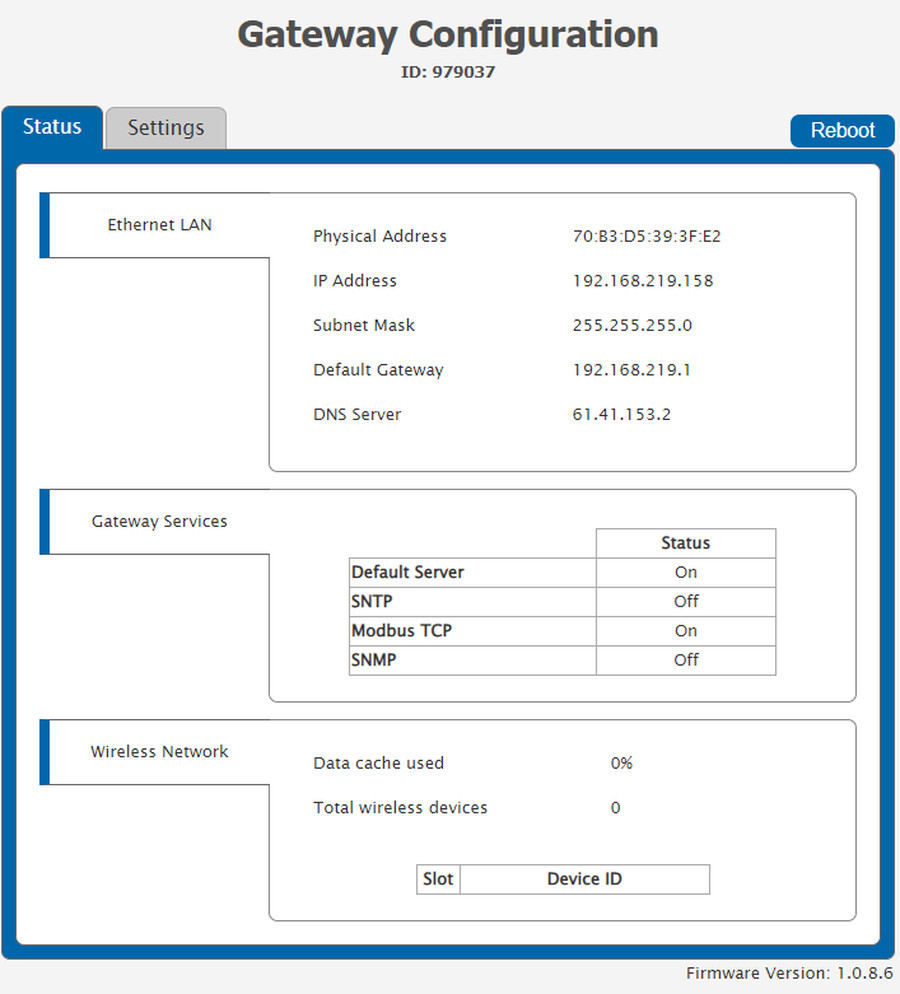
그림 2-1. 게이트웨이 웹 화면 (Status 탭) — 게이트웨이에 브라우저로 접속하면 가장 먼저 보이는 화면입니다.
Ethernet LAN 영역에서 현재 IP를, Gateway Services 영역에서 Default Server와 Modbus TCP의 On/Off 상태를 한눈에 확인할 수 있습니다.
연동 문제의 대부분은 이 화면 한 장으로 원인이 좁혀집니다.
설계 시 유의
게이트웨이는 수신한 마지막 값을 보관합니다. 센서 전송 주기(예: 1분)보다 짧은 간격으로 폴링해도 값은 갱신되지 않습니다.
값이 언제 갱신된 것인지는 레지스터에 함께 제공되는 Data Age(마지막 수신 후 경과 초)로 판단합니다.
03게이트웨이 선택 기준
현장 상위 시스템이 이더넷(Modbus TCP)을 쓰는지, 시리얼 통신(RS-232C / RS-485)을 쓰는지에 따라
선택이 갈립니다. 이 판단이 프로젝트 초기에 가장 먼저 정리되어야 하는 항목입니다.
구분
Ethernet Gateway (Modbus TCP)
Serial Modbus Gateway (SMG)
상위 연결
Ethernet / Modbus TCP
RS-232C 또는 RS-485 / Modbus RTU · ASCII
최대 센서 수
256대 (슬롯 1~256)
50대
적합한 현장
PLC · SCADA가 이더넷 망에 있고 IP 할당이 가능한 현장, 신축 · 리뉴얼 설비
기존 RS-485 계측 루프가 이미 깔려 있는 현장, 노후 설비 증설
주요 설정
고정 IP · HTTP 인터페이스 · Default Server Disable
통신 인터페이스 점퍼(RS-232 / RS-485) · 통신 파라미터
설치 환경
실내 판넬 · 사무 공간
NEMA 4X / IP65 함체 — 옥외 및 열악 환경 가능
전원
전용 어댑터
4.5 ~ 36.0 VDC (100mA 이상, 500mA 권장)
선택 판단 흐름
상위 시스템의 통신 포트를 확인합니다. 이더넷 포트로 Modbus TCP를 받고 있다면 이더넷 게이트웨이입니다.
RS-485 데이지체인이 이미 있고 여유 노드가 있다면 시리얼 모드버스 게이트웨이가 배선 재활용 면에서 유리합니다.
설치 위치가 옥외 · 분진 · 습기 환경이라면 IP65 함체를 갖춘 시리얼 모드버스 게이트웨이가 안전합니다.
필수 확인 — Unlock 여부
이더넷 게이트웨이에서 Modbus TCP를 사용하려면 반드시 Unlock Ethernet Gateway 모델이어야 합니다.
일반 모델은 게이트웨이 설정 화면이 Read Only로 표시되며 Modbus 설정을 변경할 수 없습니다.
구매 단계에서 반드시 확인하시기 바랍니다.
04Modbus 레지스터 맵 구조
이 장이 이 백서의 핵심입니다. 규칙은 단순합니다.
센서 1대 = 슬롯 1개 = 연속된 16개 레지스터이고, 그중 앞 8개는 센서 상태 정보, 뒤 8개는 실제 측정 데이터입니다.
슬롯 주소 계산식
슬롯 N의 시작 주소 = 40101 + 16 × (N − 1)
슬롯
시작 주소
끝 주소
비고
1
40101
40116
첫 번째로 등록한 센서
2
40117
40132
3
40133
40148
4
40149
40164
5
40165
40180
6
40181
40196
7
40197
40212
8
40213
40228
…
…
…
동일 규칙 반복
256
44181
44196
최대 등록 슬롯
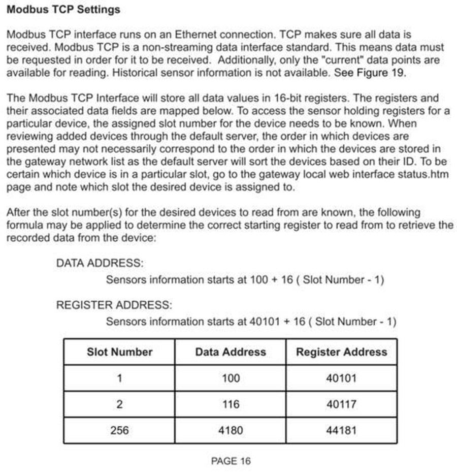
그림 4-1. 제품 문서의 Modbus TCP 설명. 슬롯 번호와 시작 주소의 관계가 원문에 그대로 정의되어 있습니다.
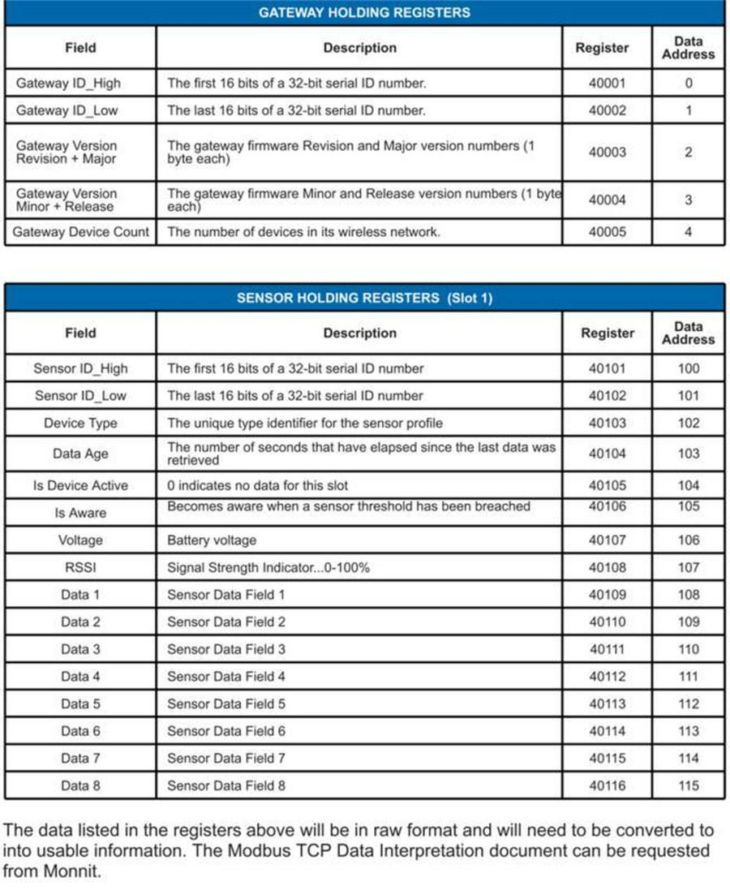
그림 4-2. 게이트웨이 자체 정보(상단)와 센서 1대분 16개 레지스터(하단)의 정의표입니다.
슬롯 내부 16개 레지스터의 구성
오프셋
항목
설명 및 해석 방법
+0 ~ +1
센서 ID
2개 레지스터를 묶어 32bit Signed Big-endian으로 읽어야 실제 센서 ID가 나옵니다.
센서가 실제로 측정한 값. 센서 종류마다 정의가 다릅니다(5장 참조). 사용하지 않는 채널은 무효값(N/A)입니다.
상위 시스템 설계 팁
앞 8개(상태 정보)만 따로 묶어 설비 헬스 모니터링 태그로 구성해 두면, 센서 고장 · 통신 두절 · 배터리 소진을
측정값과 별개로 자동 감시할 수 있습니다. 특히 +4(동작 상태)와 +3(Data Age)를 조합하면
"값은 있는데 갱신이 멈춘" 상황까지 잡아낼 수 있습니다.
05센서 타입별 데이터 정의
Data 1 ~ Data 8의 의미는 센서 종류에 따라 완전히 달라집니다. 이 장은 실제 Modbus Poll 화면과
같은 시각의 플랫폼 화면을 나란히 놓고, 숫자가 어떻게 실제 값이 되는지 보여줍니다.
온습도 센서 (Application ID 43)
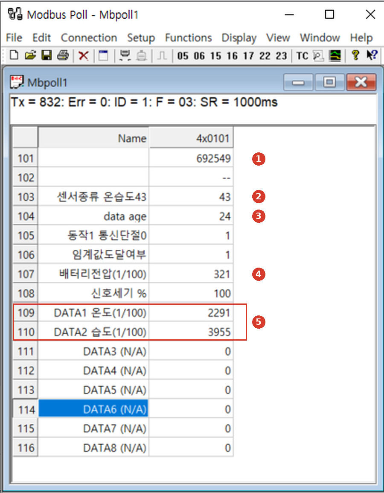
그림 5-1. 슬롯 1(40101~40116)에 등록된 온습도 센서의 실제 Modbus Poll 화면.
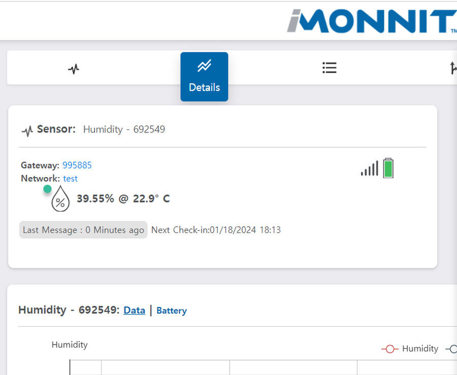
그림 5-2. 같은 센서의 플랫폼 화면. 39.55% @ 22.9℃로 표시되어 그림 5-1의 레지스터 값과 일치합니다.
140101 = 692549 — 센서 ID입니다. 40101과 40102 두 칸을 32bit Signed Big-endian으로 읽은 결과이며, 센서 본체 스티커의 ID와 같습니다.
240103 = 43 — Application ID. 43은 온습도 센서를 뜻합니다. 이 값으로 슬롯에 어떤 센서가 붙었는지 프로그램이 스스로 판별할 수 있습니다.
340104 = 24 — Data Age. 마지막 수신 후 24초가 지났다는 뜻입니다. 이 값이 계속 커지기만 하면 통신이 끊긴 것입니다.
440107 = 321 — 배터리 전압. ÷100 하여 3.21V입니다. 2V 이하이면 교체 대상입니다.
540109 = 2291, 40110 = 3955 — 측정값입니다. 두 값 모두 ÷100 하여 온도 22.91℃, 습도 39.55 %RH가 됩니다. 그림 5-2의 플랫폼 표시와 정확히 같습니다.
채널
값
비고
Data 1 (+8)
온도 × 100
섭씨(℃)로만 제공됩니다. 화씨가 필요하면 상위 시스템에서 변환합니다.
Data 2 (+9)
상대습도(%RH) × 100
3955 → 39.55 %RH
Data 3 ~ 8
미사용 (N/A)
0이 표시되지만 의미 없는 값입니다.
누수(물감지) 센서 (Application ID 4)
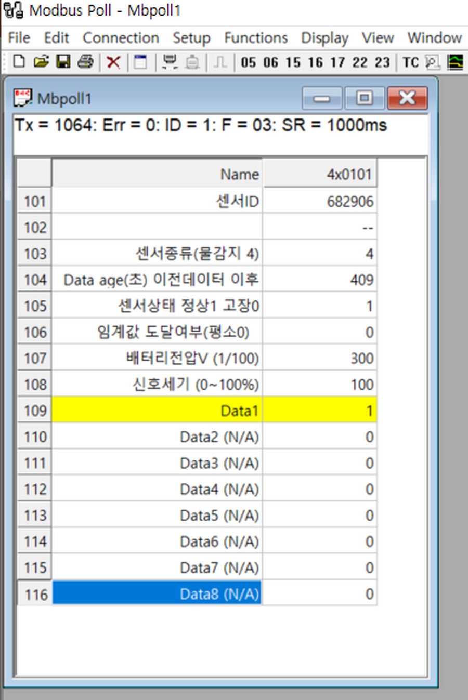
그림 5-3. 누수가 감지된 순간의 레지스터 값. Data 1(40109)이 1로 바뀌어 있습니다.
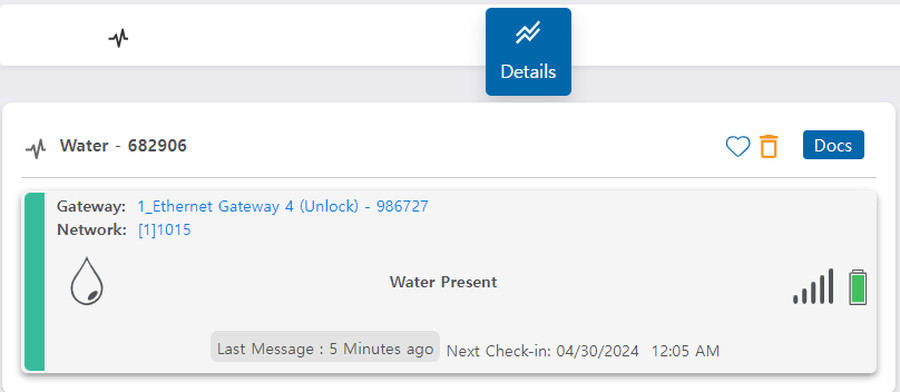
그림 5-4. 같은 시점 플랫폼 화면의 Water Present 표시. Modbus 값 1과 같은 사건입니다.
채널
값
비고
Data 1 (+8)
0 = 정상 / 1 = 누수 감지
PLC에서는 이 한 칸만 알람 접점으로 연결하면 됩니다.
Data 2 ~ 8
미사용 (not available)
누수 센서는 Data 1만 유효합니다.
모션 플러스 센서 (Application ID 138)
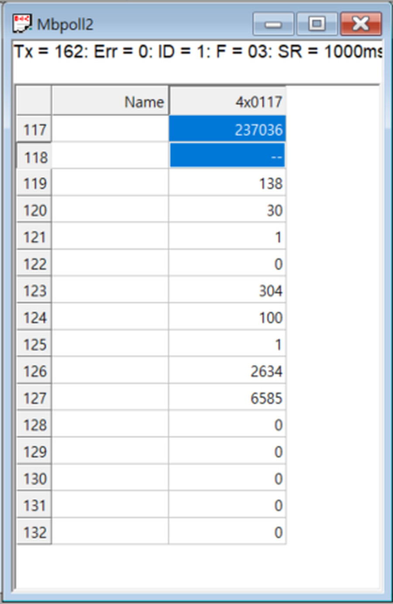
그림 5-5. 슬롯 2(40117~40132)에 등록된 모션 플러스 센서. 센서 ID 237036, Application ID 138이며
40126 = 2634 → 온도 26.34℃, 40127 = 6585 → 습도 65.85 %RH로 읽습니다.
슬롯 2이므로 시작 주소가 40117인 점에 주목하십시오.
채널
값
비고
Data 1
모션 감지 여부
0 = 모션 없음 / 1 = 모션 감지
Data 2
온도 × 100
2634 → 26.34℃
Data 3
상대습도(%RH) × 100
6585 → 65.85 %RH
Data 4 ~ 8
미사용
조도 센서 (Application ID 107) — 스케일 처리 주의
조도는 값의 범위가 넓어 Data 1과 Data 2 두 칸을 합쳐서 해석합니다.
상위 시스템 로직을 짤 때 가장 실수가 잦은 부분이므로 화면 세 장으로 순서대로 보겠습니다.
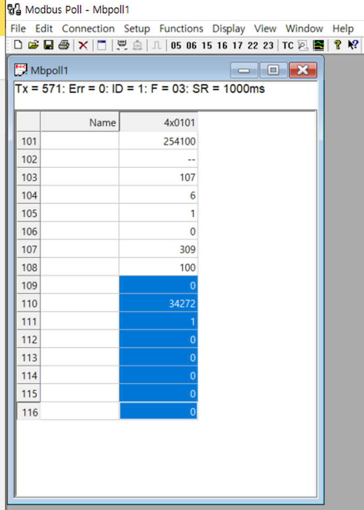
그림 5-6. 일반 실내 조도 — Data 1(40109) = 0, Data 2(40110) = 34272.
Data 1이 0이므로 34272 ÷ 100 = 342.72 Lux입니다.
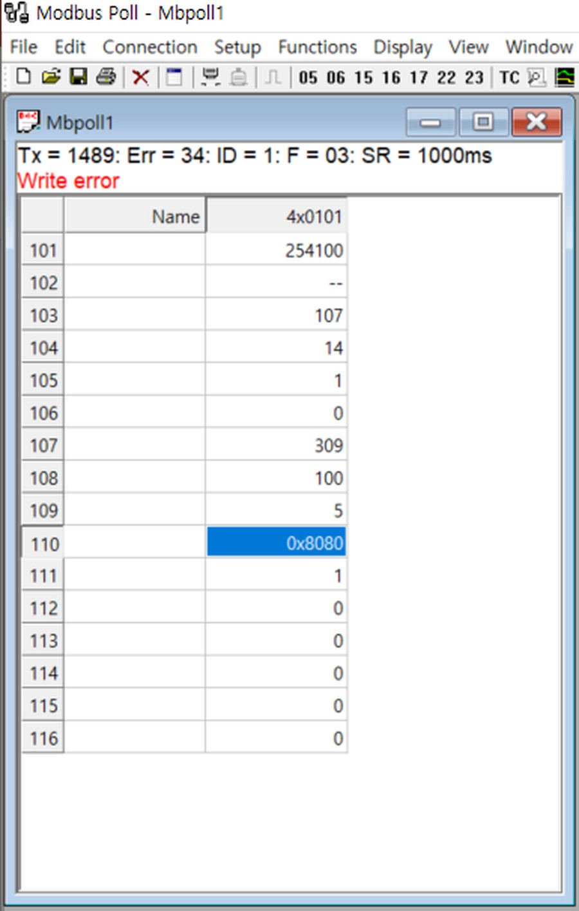
그림 5-7. 조도가 높을 때 — Data 1 = 5, Data 2의 표시 형식을 HEX로 바꾸면 8080.
두 값을 이어 붙여 0x58080이 됩니다.
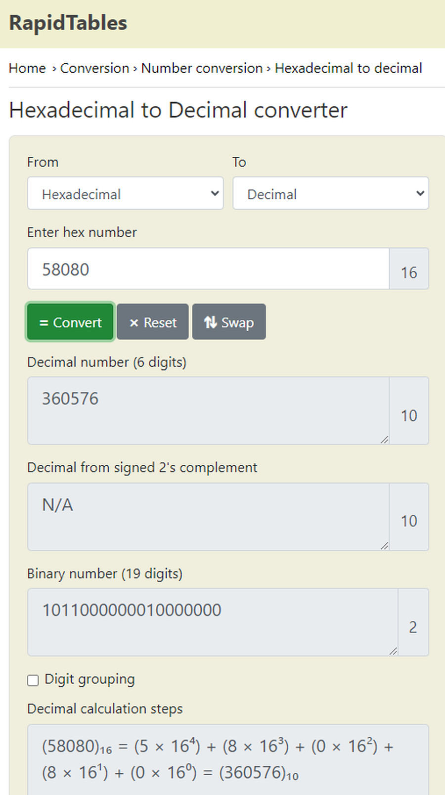
그림 5-8. 0x58080을 10진수로 변환하면 360576이고, ÷100 하여 3,605.76 Lux가 됩니다.
(같은 방식으로 Data 1 = 14, Data 2 = 0x2600이면 0x142600 = 1,320,448 → 13,204.48 Lux)
PLC · BMS 구현 시 — 이 한 줄이면 끝납니다
위 두 경우는 결국 같은 식입니다. HEX 변환 없이 아래 계산만 넣으면 두 경우 모두 처리됩니다. 조도(Lux) = (Data1 × 65536 + Data2) ÷ 100
진동 · G-Force · 기울기(Tilt) · 공기질(PM) 센서
진동 계열(일반 진동, 정밀 진동, G-Force Max/Average), 기울기, 공기질 센서 역시 동일하게
슬롯 시작 주소 기준 +8부터 8개 채널에 측정값이 실립니다. 축별 값, 최대 · 평균값 등 채널 구성이 모델마다 다르므로
해당 센서의 정의 문서를 기준으로 매핑합니다.
어느 슬롯에 무슨 센서인지 헷갈릴 때
각 슬롯의 +0/+1(센서 ID, 32bit Big-endian)과 +2(Application ID)만 읽어보면 즉시 확인할 수 있습니다.
센서 본체 스티커의 ID와 대조하면 슬롯 배치가 그대로 드러납니다.
06게이트웨이 설정 절차
이더넷 게이트웨이 기준 설정 순서입니다. 순서 자체가 중요합니다.
특히 IP 변경은 반드시 마지막이며, Default Server 해제를 빠뜨리면 Modbus 전용 운용이 정상 동작하지 않습니다.
아래 각 단계에는 실제 화면을 함께 실었습니다.
Unlock 게이트웨이인지 확인Modbus TCP 전송을 위해서는 반드시 Unlock Ethernet Gateway 모델이어야 합니다.
설정 화면에 Read Only 문구가 보이면 Modbus 설정이 불가능합니다.
iMonnit 플랫폼에서 HTTP · Modbus TCP 옵션 활성화Read Only가 표시되어 수정이 안 될 경우, imonnit.com에 가입 후 게이트웨이를 등록(제품 ID / SC 코드 입력)하고
Settings에서 HTTP 및 Modbus TCP를 활성화합니다. 이 작업은 유동 IP(DHCP) 환경에서 진행해야 하며,
게이트웨이 아이콘이 녹색(활성)이어야 합니다. 설정 반영에 최대 5분이 걸리며, 게이트웨이의 Utility 버튼을 한 번 살짝 누르면 즉시 적용됩니다.
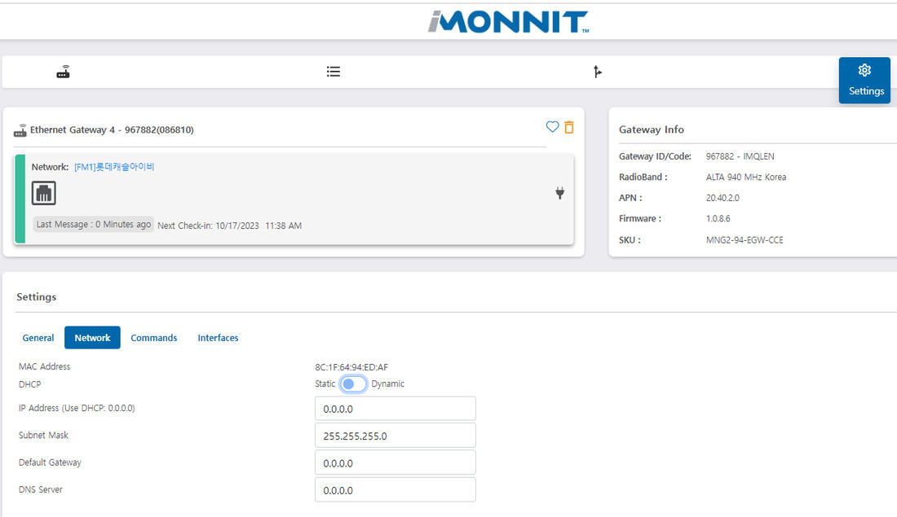
그림 6-1. iMonnit 플랫폼의 게이트웨이 설정 화면. 여기서 HTTP 인터페이스와 Modbus TCP 옵션을 켭니다.
왼쪽 게이트웨이 아이콘이 녹색이어야 설정이 전달됩니다.
게이트웨이에 할당된 IP 확인공유기 · 라우터의 관리자 페이지(보통 기기 뒷면에 http://192.168.xx.1 형태로 표기)에 접속해
DHCP 할당 목록에서 게이트웨이가 받은 IP를 확인합니다.
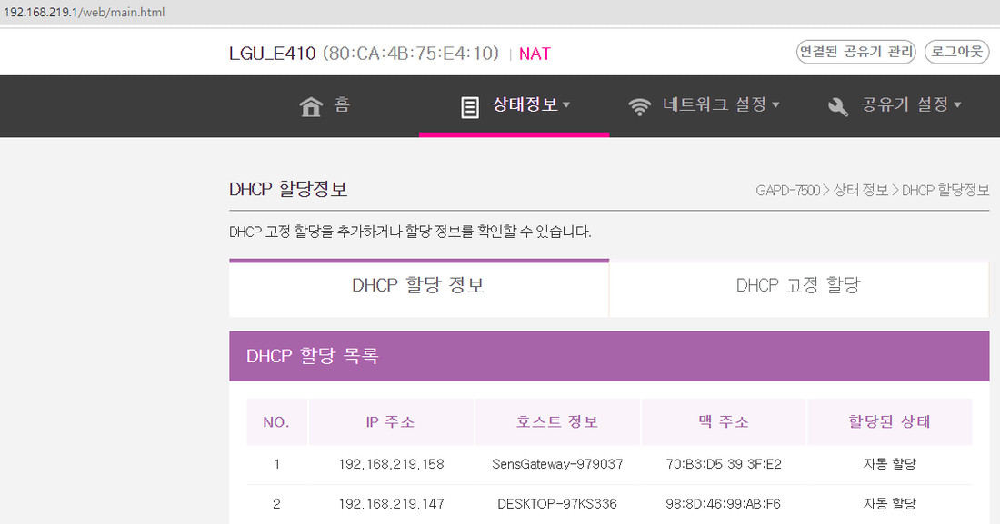
그림 6-2. 공유기 관리자 페이지의 DHCP 할당 목록. 목록에서 게이트웨이 항목을 찾아 IP를 확인합니다.
이 예시에서는 192.168.219.158이 할당되었습니다.
웹브라우저로 게이트웨이 설정 페이지 접속PC와 게이트웨이가 같은 네트워크에 있어야 합니다. 접속 후 Gateway Configuration 영역에
Read Only 문구가 없어야 정상이며, Settings 탭에서 아래 항목을 설정합니다.
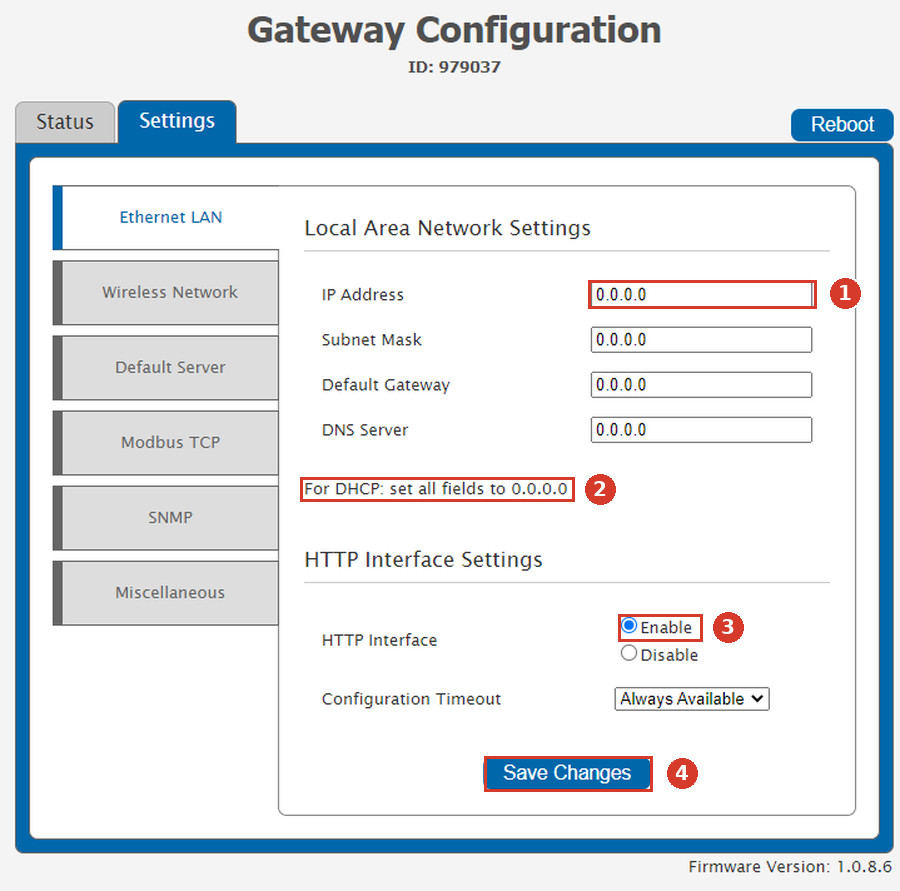
그림 6-3. Settings → Ethernet LAN
1IP Address / Subnet Mask / Default Gateway / DNS Server — 현장에서 지정받은 고정 IP를 입력하는 곳입니다. 다만 이 항목은 맨 마지막에 입력합니다(7단계 참조).
2For DHCP: set all fields to 0.0.0.0 — 유동 IP로 쓰려면 네 칸을 모두 0.0.0.0으로 둡니다. 게이트웨이의 초기 상태가 이것입니다.
3HTTP Interface = Enable — 반드시 Enable이어야 이 설정 페이지에 계속 접속할 수 있습니다.
4Save Changes — 각 탭마다 저장 버튼이 따로 있습니다. 탭을 옮기기 전에 반드시 누릅니다.
Settings → Wireless Network에서 센서 등록센서 본체 측면 스티커의 ID와 SC 코드를 입력해 등록합니다. 슬롯 1번부터 256번까지 사용할 수 있습니다.
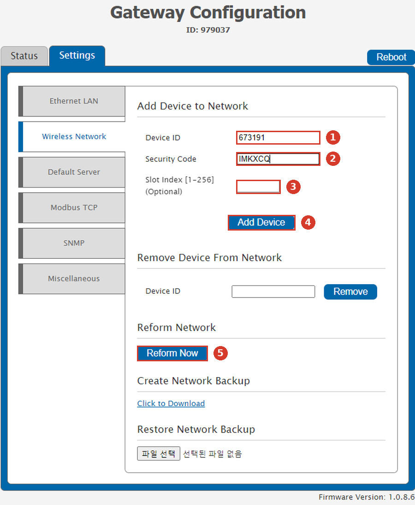
그림 6-4. Settings → Wireless Network
1Device ID — 센서 측면 스티커의 ID를 입력합니다.
2Security Code — 같은 스티커의 SC 코드를 입력합니다. 대소문자를 구분합니다.
3Slot Index [1–256] (Optional) — 여기가 레지스터 주소를 결정합니다. 비워두면 자동 배정되지만, 슬롯 번호를 직접 지정하면 원하는 주소에 센서를 고정할 수 있습니다(슬롯 3 → 40133).
4Add Device — 등록 실행. 등록된 센서는 Status 탭 하단 목록에서 확인됩니다.
5Reform Now — 센서 등록·삭제를 모두 마친 뒤 마지막에 한 번 눌러 센서 리스트를 갱신합니다. 이 버튼을 누르지 않으면 값이 올라오지 않는 경우가 있습니다.
삭제는 아래 Remove Device From Network에 Device ID를 넣고 Remove를 누릅니다.
Create Network Backup으로 센서 등록 목록을 파일로 내려받아 두면 게이트웨이 교체 시 그대로 복원할 수 있습니다.
Default Server 비활성화 및 하트비트 조정모넷 클라우드 플랫폼을 쓰지 않고 게이트웨이의 Modbus TCP만 사용한다면, 이 설정을 반드시 해야 합니다.
연동 실패 원인 1위가 이 항목입니다.
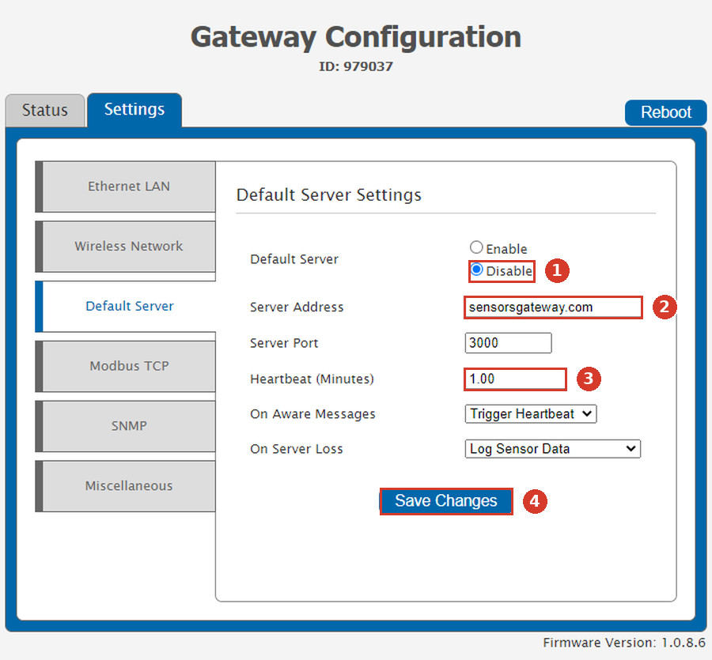
그림 6-5. Settings → Default Server
1Default Server = Disable — Modbus 전용으로 운용할 때는 반드시 Disable을 선택합니다. 화면처럼 Disable 쪽에 점이 찍혀 있어야 합니다.
2Server Address = sensorsgateway.com — 기본 서버 주소입니다. Disable 상태에서는 이 주소로 데이터를 보내지 않습니다.
3Heartbeat (Minutes) — 기본 5분에서 1분(1.00)으로 낮추는 것을 권장합니다. 값 갱신이 빨라집니다.
4Save Changes — 저장을 눌러야 반영됩니다.
마지막에 고정 IP 설정게이트웨이의 초기 연결 옵션은 DHCP(유동)입니다. 고정 IP 현장에 설치하는 경우, 위 항목을 모두 마친 뒤
맨 마지막에 그림 6-3의 ①에 현장 IP · 서브넷 · 게이트웨이를 입력합니다.
IP를 먼저 바꾸면 그 즉시 설정 페이지에 접속할 수 없게 됩니다.
연동이 안 될 때 가장 흔한 원인 3가지
① Unlock 모델이 아니거나 iMonnit에서 Modbus TCP 옵션이 꺼져 있음 (Read Only 표시)
② Default Server를 Disable하지 않음 (그림 6-5 ①)
③ IP를 먼저 바꾼 뒤 나머지 설정을 하려다 접속이 끊김 — IP는 항상 마지막입니다
설정 페이지에 접속이 안 될 때 — HTTP 인터페이스 강제 활성화
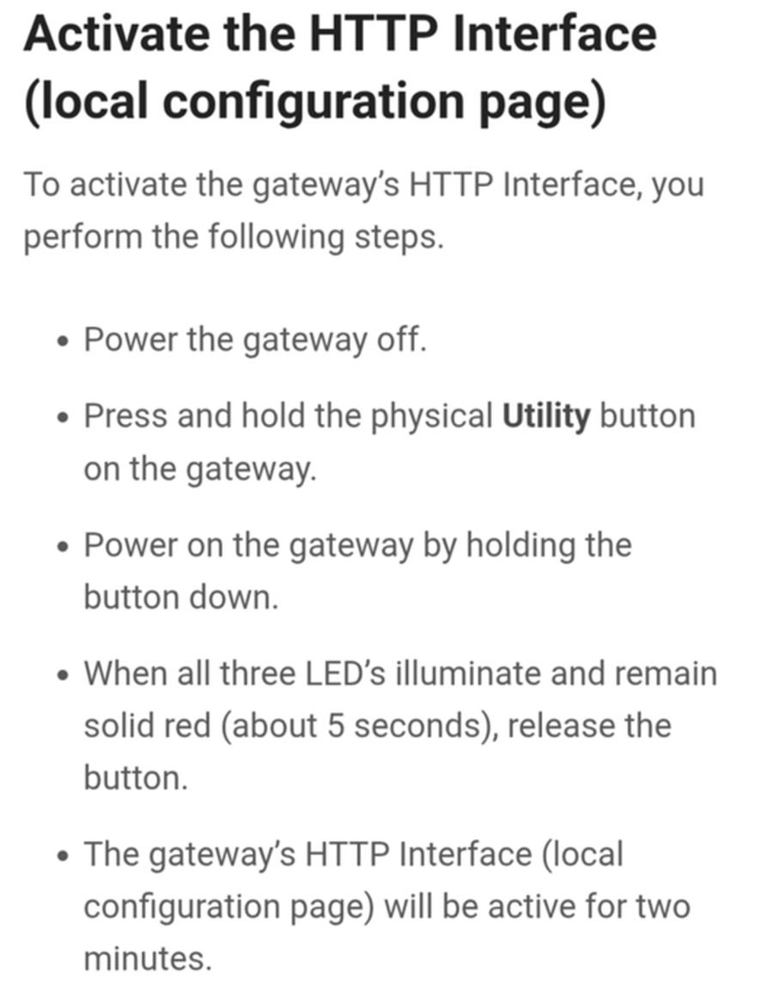
그림 6-6. 제품 문서에 기재된 HTTP 인터페이스 활성화 절차 원문입니다.본체 조작 순서
게이트웨이의 전원을 끕니다.
본체의 Utility 물리 버튼을 누른 상태로 유지합니다.
버튼을 누른 채 전원을 켭니다.
약 5초 후 세 개의 LED가 모두 켜지고 고정된 빨간색으로 바뀌면 손을 뗍니다.
이후 2분 동안 로컬 설정 페이지가 열립니다. 이 시간 안에 접속해 설정합니다.
07Modbus Poll로 연동 검증하기
PLC · BMS에 붙이기 전에 PC의 Modbus 마스터 도구로 먼저 값을 확인하는 것을 강력히 권장합니다.
이 단계에서 주소와 스케일을 확정해 두면, 상위 시스템 작업은 매핑만 남습니다.
아래는 Modbus Poll 기준이며, 다른 도구도 항목 이름은 대부분 같습니다.
1단계 — Connection Setup (연결 설정)
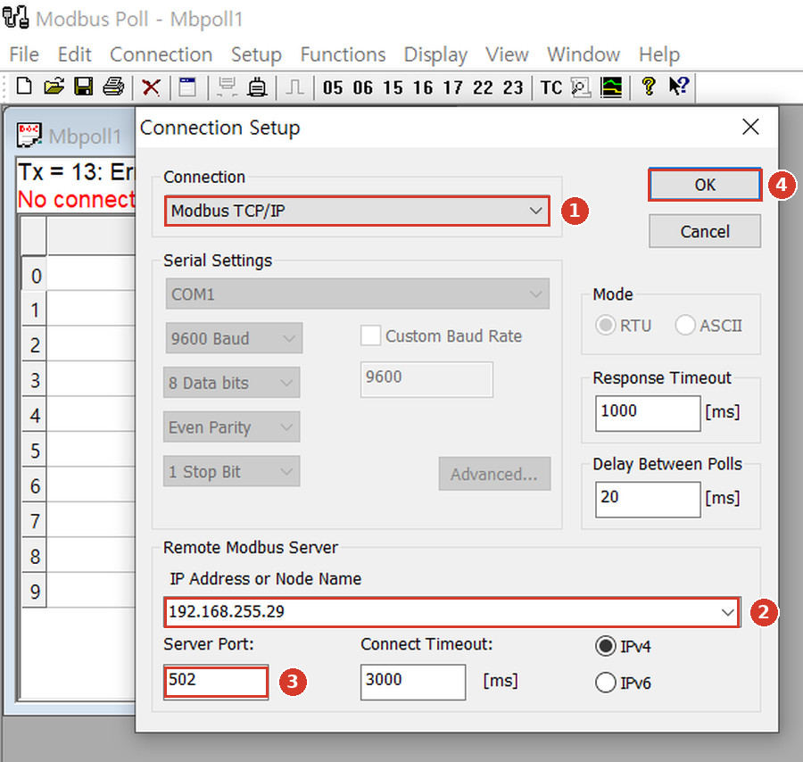
그림 7-1. Connection 메뉴 → Connect 를 선택하면 나오는 화면입니다.
1Connection = Modbus TCP/IP — 이더넷 게이트웨이는 이 항목을 선택합니다. 시리얼 게이트웨이라면 Serial Port를 선택하고 아래 Serial Settings를 사용합니다.
2IP Address or Node Name — 게이트웨이에 할당된 IP를 입력합니다(6장 그림 6-2에서 확인한 값).
3Server Port = 502 — Modbus TCP 표준 포트입니다. 기본값 그대로 둡니다.
4OK — 연결합니다. 창 상단에 Err = 0이 유지되면 통신이 정상입니다.
2단계 — Read/Write Definition (읽기 설정)
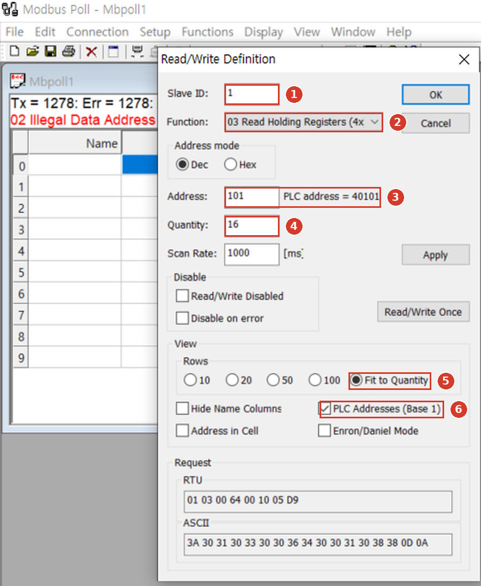
그림 7-2. Setup 메뉴 → Read/Write Definition. 이 화면의 설정이 잘못되면
상단에 02 Illegal Data Address 오류가 뜹니다.
1Slave ID = 1 — 게이트웨이의 슬레이브 주소입니다.
2Function = 03 Read Holding Registers (4x) — 센서 데이터는 홀딩 레지스터에 있으므로 반드시 03번입니다.
3Address = 101 — 슬롯 1번 센서. 화면 오른쪽에 PLC address = 40101이라고 자동 표시되어 맞게 넣었는지 바로 확인됩니다. 슬롯 2번은 117, 슬롯 3번은 133입니다.
4Quantity = 16 — 센서 1대당 레지스터가 16개이므로 16을 넣습니다.
5Rows = Fit to Quantity — 16줄만 보이게 되어 화면이 깔끔해집니다.
6PLC Addresses (Base 1) 체크 — 체크해야 101 → 40101로 해석됩니다. 이 체크를 빠뜨리면 주소가 한 칸씩 밀립니다.
3단계 — 센서 ID로 슬롯 확인 (32bit 형식 변경)
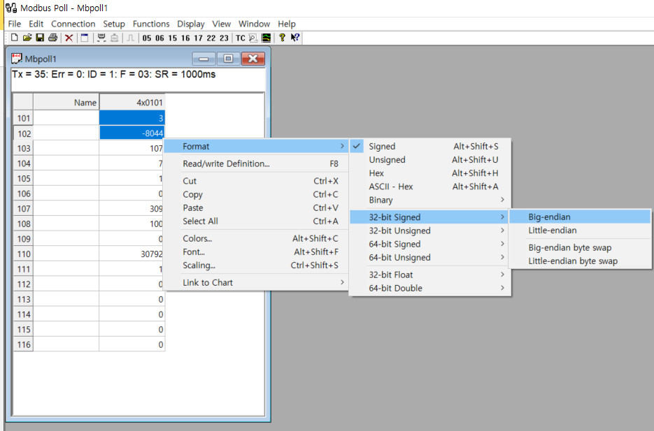
그림 7-3. 101과 102 두 줄을 함께 선택한 뒤 오른쪽 클릭 → Format → 32 Bit Signed → Big-endian을 선택합니다.
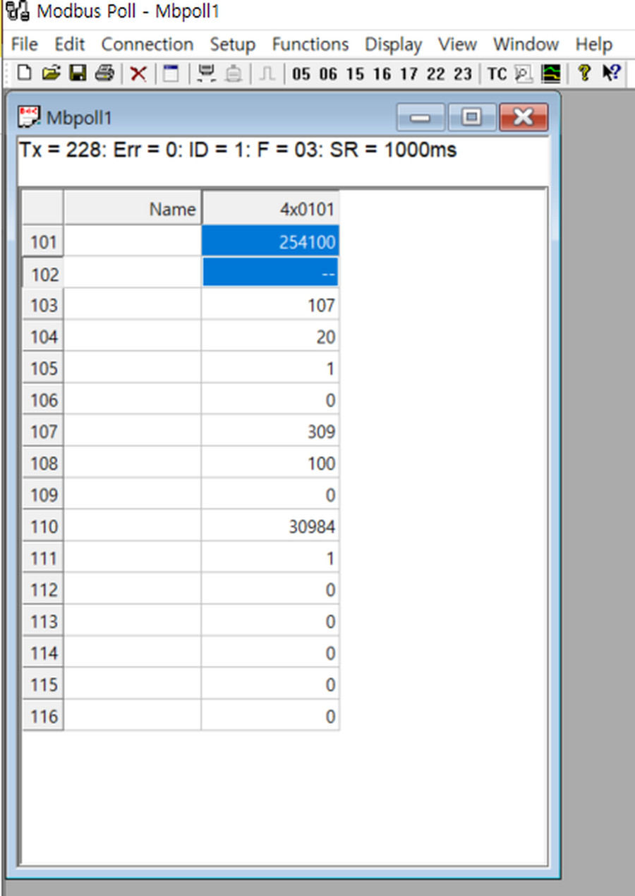
그림 7-4. 형식을 바꾸면 101 칸에 센서 ID(254100)가 나타납니다. 103의 107은 조도 센서라는 뜻입니다.
4단계 — 값이 맞는지 확인하는 순서
센서 ID 대조그림 7-4처럼 표시된 ID가 센서 본체 스티커의 ID와 같은지 확인합니다. 다르면 슬롯 배치를 잘못 본 것입니다.
Application ID로 센서 종류 확인103번 값이 센서 종류 코드입니다. 43이면 온습도, 4면 누수, 107이면 조도, 138이면 모션 플러스입니다.
상태 레지스터로 통신 건전성 확인105(동작 상태)가 1인지, 104(Data Age)가 센서 전송 주기 이내인지, 108(신호 세기)이 충분한지, 107(배터리)이 2V를 넘는지 확인합니다.
측정값과 스케일 확정109부터 순서대로 확인하며 실제 환경값과 비교합니다. 5장의 스케일 규칙(÷100, 조도 합성)을 여기서 확정해 상위 시스템에 반영합니다.
브라우저 화면으로 교차 검증게이트웨이 IP로 직접 접속하면 등록된 센서 목록과 최신 값이 보입니다. Modbus로 읽은 값과 대조하면 매핑 오류가 즉시 드러납니다.
여러 슬롯을 한 화면에서 보기
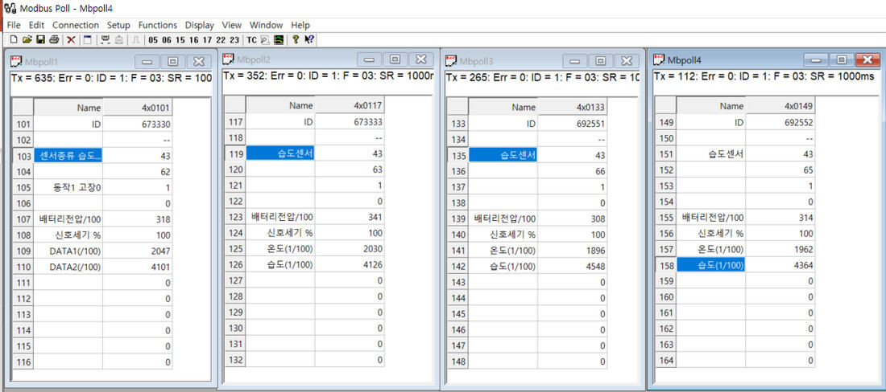
그림 7-5. Read/Write Definition을 여러 개 만들면 슬롯을 나란히 볼 수 있습니다.
이 화면은 온습도 센서 4대가 40101 / 40117 / 40133 / 40149 네 슬롯에 등록된 상태입니다.
현장 인수인계 전에 이렇게 전체를 한 번 펼쳐 확인해 두면 좋습니다.
현장 인수인계 시
이 단계에서 확인한 슬롯 ↔ 센서 ID ↔ 설치 위치 ↔ 레지스터 주소를 한 장의 표로 정리해 두면,
이후 센서 추가 · 교체 · 장애 대응이 훨씬 빨라집니다. 9장의 관리 대장 양식을 그대로 쓰셔도 됩니다.
08적용 시나리오
공장 설비 — PLC · SCADA 확장
적용 지점
계측 항목
기대 효과
펌프 · 팬 · 모터
진동, G-Force, 표면 온도
베어링 이상 · 언밸런스를 조기에 감지해 계획 정비로 전환
배전반 · 제어반
내부 온도, 습도
여름철 과열과 결로에 의한 절연 저하 사전 대응
배관 · 밸브 하부
누수
배선이 어려운 지점의 누수를 즉시 PLC 알람으로 연결
물탱크 · 챔버
기울기, 온도
구조물 변위 · 고임 감지
창고 · 자재 보관
온습도, 조도, 모션
보관 조건 준수 이력 확보 및 출입 감지
건물 — BMS 확장
적용 지점
계측 항목
기대 효과
기계실 · 펌프실
진동, 온도, 누수
BMS에 없던 회전기기 상태를 기존 화면에서 함께 감시
공조기 · 덕트
온습도, 공기질(PM)
실내 공기질 지표를 BMS 트렌드에 통합
전기실 · UPS실
온도, 습도
과열 · 결로 조건을 상시 감시
지하 · 저수조
누수, 온도
침수 사고 조기 경보
공용부 · 회의실
조도, 모션, CO₂
사용 실태 기반 조명 · 환기 제어 근거 확보
공통되는 도입 이유
위 사례들의 공통점은 "필요성은 오래전부터 알았지만 배선 때문에 미뤄둔 지점"이라는 것입니다.
무선센서와 Modbus 연동은 새로운 관제 체계를 만드는 것이 아니라, 이미 있는 관제 체계의 빈칸을 채우는 방식입니다.
09도입 전 체크리스트
아래 항목이 정리되면 구성 제안과 견적이 한 번에 나옵니다. 현장 조사 시 그대로 사용하십시오.
상위 시스템
확인 항목
기재란
상위 시스템 종류 (PLC / BMS / SCADA / HMI / DCS)
제조사 · 모델명
Modbus 지원 방식 (TCP / RTU / ASCII)
시리얼인 경우 인터페이스 (RS-232C / RS-485)
Modbus 마스터 폴링 주기
사용 가능한 여유 레지스터 · 태그 수
네트워크 · 설치 환경
확인 항목
기재란
게이트웨이 설치 위치 및 이더넷 포설 가능 여부
고정 IP 할당 가능 여부 / 배정 IP · 서브넷 · 게이트웨이
게이트웨이 전원 확보 여부
설치 환경 (실내 / 옥외 / 분진 · 습기 / 온도 범위)
센서 ↔ 게이트웨이 최장 거리, 사이의 벽 · 구조물
사내 보안 정책상 외부 통신 차단 여부
계측 계획
확인 항목
기재란
계측 항목 (온도 / 습도 / 진동 / 누수 / 조도 / 공기질 등)
초기 설치 센서 수량 / 향후 증설 계획
필요한 측정 주기 (분 단위)
알람 조건 및 임계값
클라우드 플랫폼(iMonnit) 병행 사용 여부
데이터 보관 · 이력 관리 주체 (기존 시스템 / 별도)
설치 후 관리 대장 (권장 양식)
슬롯
센서 ID
센서 종류
설치 위치
시작 주소
1
40101
2
40117
3
40133
4
40149
5
40165
6
40181
7
40197
8
40213
10기술지원 문의
문서대로 해도 값이 올라오지 않는 경우가 있습니다. 대부분은 아래 다섯 가지 중 하나이며,
먼저 1차 점검을 해보시고 그래도 해결되지 않으면 이 장의 요청서 양식대로 보내 주십시오.
화면 캡처 두 장만 있으면 원인 파악이 훨씬 빨라집니다.
문의 전 1차 점검 5가지
#
확인할 것
어디서 보는가
1
Read Only 문구가 있는가
게이트웨이 웹 화면 상단. 있으면 Unlock 모델이 아니거나 iMonnit에서 Modbus TCP가 꺼진 상태입니다. (3장 · 6장 2단계)
2
Default Server가 Disable인가
Settings → Default Server (그림 6-5 ①). Modbus 전용 운용 시 반드시 Disable입니다.
3
Modbus TCP가 On인가
Status 탭의 Gateway Services 표 (그림 2-1)
4
PC와 게이트웨이가 같은 네트워크인가
공유기 DHCP 목록에서 두 기기의 IP 대역 확인 (그림 6-2)
5
센서 등록 후 Reform Now를 눌렀는가
Settings → Wireless Network (그림 6-4 ⑤)
증상별 점검 순서
증상
먼저 확인할 것
참조
게이트웨이 웹 화면에 접속이 안 됨
PC와 같은 네트워크인지, IP를 먼저 바꾸지 않았는지. 접속이 계속 안 되면 Utility 버튼으로 HTTP 인터페이스를 2분간 강제 활성화
Data 1을 빼고 Data 2만 쓰고 있지 않은지. (Data1 × 65536 + Data2) ÷ 100
5장 그림 5-6~5-8
온도가 2291처럼 100배로 나옴
정상입니다. ÷100 하여 22.91℃로 씁니다.
5장 그림 5-1
고정 IP 입력 후 접속 불가
IP는 항상 마지막에 설정. 유동 IP 환경에서 재설정 후 다시 진행
6장 7단계
기술지원 요청서 (작성 후 그대로 보내 주십시오)
항목
기재란
회사명 / 현장명
담당자 성함 / 연락처 / 이메일
게이트웨이 모델 (이더넷 / 시리얼 모드버스)
게이트웨이 ID (설정 화면 상단 표시)
펌웨어 버전 (설정 화면 우하단 표시)
등록된 센서 종류 / 수량 / 슬롯 번호
상위 시스템 (PLC · BMS 제조사 / 모델)
네트워크 (고정 IP / DHCP, 할당 IP)
증상 — 무엇이, 언제부터, 어떻게
이미 시도해 본 것 (위 1차 점검 결과)
재현 여부 (항상 / 가끔 / 특정 시간대)
함께 보내 주시면 좋은 화면 캡처 3장
① 게이트웨이 웹 화면의 Status 탭 전체 (그림 2-1 형태 — IP와 Modbus TCP On/Off가 함께 보입니다)
② Settings → Default Server 화면 (그림 6-5 형태)
③ Modbus Poll의 Read/Write Definition 창과 값 화면 (그림 7-2, 7-4 형태 — 상단 오류 문구까지 보이게)
이 세 장이면 대부분의 원인이 캡처만으로 파악됩니다.
기술지원 · 현장 구성 문의
연동 구성 검토, 레지스터 매핑표 초안 작성, 설치 전 사전 설정, Modbus Poll 검증 절차 안내까지 지원합니다.
요청서와 화면 캡처를 함께 보내 주시면 회신이 빨라집니다.
이메일 korea@monnit.com 회사 주식회사 모넷코리아 (Monnit Korea) 주소 서울시 서초구 효령로 380 세안빌딩 8층 제품 정보 www.monnit.com | 플랫폼 www.imonnit.com
11자주 묻는 질문 & 제품 사양
기존 PLC 프로그램을 많이 수정해야 하나요?
아니요. 게이트웨이는 표준 Modbus 슬레이브로 동작하므로, 다른 Modbus 계측기를 추가할 때와 동일합니다.
필요한 작업은 레지스터 주소를 태그에 매핑하고, 일부 센서의 스케일(÷100, 조도 합성)을 반영하는 정도입니다.
인터넷 연결 없이 폐쇄망에서도 쓸 수 있나요?
가능합니다. 클라우드 플랫폼을 사용하지 않는 경우 Default Server를 Disable로 설정하고
로컬 Modbus 통신만으로 운용합니다. 다만 최초 Modbus TCP 옵션 활성화 시점에는 iMonnit 접속이 필요할 수 있으므로,
설치 전 사무실 등 인터넷 환경에서 설정을 마친 뒤 현장에 반입하는 것을 권장합니다.
센서 하나가 통신이 끊기면 상위에서 알 수 있나요?
알 수 있습니다. 각 슬롯의 동작 상태 레지스터가 0으로 바뀌고, Data Age가 계속 증가합니다.
이 두 값을 상위 시스템 알람 조건으로 잡아두면 센서 장애를 자동으로 감지합니다.
배터리는 언제 교체하나요?
배터리 전압 레지스터 값을 100으로 나눈 값이 실제 전압입니다. 2V 이하이면 교체 대상으로 판단합니다.
상위 시스템에 예방 알람으로 등록해 두면 순회 점검 없이 관리할 수 있습니다.
센서를 나중에 추가하면 주소가 밀리나요?
밀리지 않습니다. 슬롯 번호에 주소가 고정되어 있으므로, 새 센서를 비어 있는 슬롯에 등록하면
기존 매핑은 그대로 유지됩니다. 등록 시 Slot Index를 직접 지정하면 원하는 주소에 고정할 수 있고,
등록 후에는 Reform Now로 센서 리스트를 갱신하십시오.
온도를 화씨로 받을 수 있나요?
게이트웨이는 섭씨(℃)로만 제공합니다. 화씨가 필요하면 상위 시스템에서 변환 로직을 넣어야 합니다.
게이트웨이를 교체하면 센서를 다시 다 등록해야 하나요?
Settings → Wireless Network의 Create Network Backup으로 등록 목록을 파일로 받아 두면,
새 게이트웨이에서 Restore Network Backup으로 그대로 복원할 수 있습니다. 설치 완료 시점에 한 번 받아 두시길 권합니다.
사용 환경 주의
상용 등급 제품은 일반적인 온도 · 습도 · 기압 환경을 전제로 설계되었습니다.
부식성 · 환원성 가스(염소, 황화수소, 암모니아, 질소산화물 등), 휘발성 · 인화성 가스, 다량의 분진,
고압 · 저압, 침수 또는 과도한 습기, 염수 · 유류 · 화학액 · 유기용제 환경, 극심한 진동이 있는 장소에서는 사용을 피하십시오.
지정된 온도 범위를 벗어나면 특성 저하와 고장의 원인이 됩니다.
본 백서는 Monnit ALTA 무선센서 및 게이트웨이 제품 자료와 국내 설치 사례를 바탕으로 작성되었습니다.
본문의 화면 캡처에 표시된 IP · 센서 ID · 측정값은 캡처 당시의 실제 값이며, 독자의 현장에서는 다르게 표시됩니다.
레지스터 정의 및 사양은 제품 모델과 펌웨어 버전에 따라 달라질 수 있으므로, 실제 적용 시에는 해당 제품의 최신 정의 문서를 기준으로 하시기 바랍니다.
Monnit, iMonnit, ALTA, Encrypt-RF는 Monnit Corporation의 상표입니다.